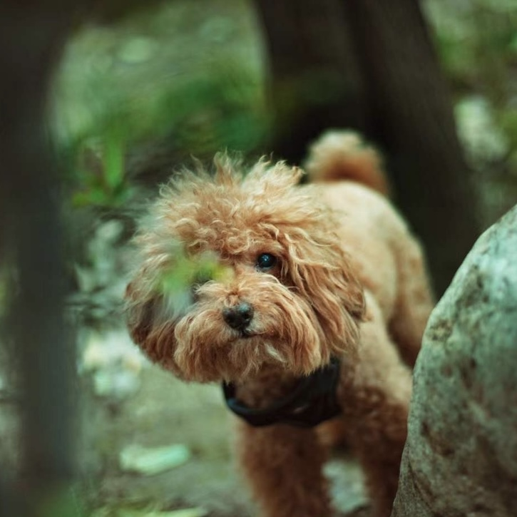
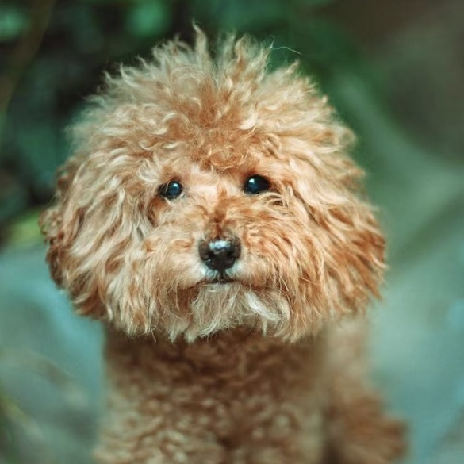

Coco is a small coffee-colored teddy dog. Due to his black,round eyes and nose resembling three buttons, I named him "Button" in Chinese. The pronunciation of "Coco" is quite similar to the Chinese word for "button." I had harbored the dream of owning a puppy since my childhood, and on one special birthday, Coco made his way into my life. My initial encounter with Coco was when he was just a tiny pup, curled up in the corner of his cage. It was in that moment that I made the decision to bring him into my home.
Show More